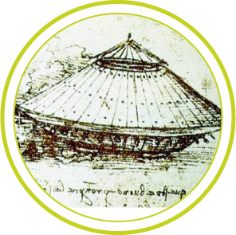
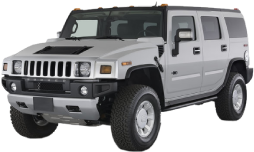

War sees rapid advancement in everything from medical techniques to aviation technology, and seemingly all things in between. When the war is ended, however, these advancements in technology don’t simply sit on the shelf. More often than not they find their way into everyday applications in modern life. A great example of this are the vehicles that are produced for war, such as the iconic Jeep, the well-known humvee, and the hardworking armored vehicle.
Each of these vehicles has a place in our modern society
-
Jeeps can be seen just about everywhere, whether on a city street or a beach
-
Hummers are the civilian version of the military Humvee, but even a few decommissioned military grade Humvees can be found kicking around the streets
-
And, finally, most police departments now are equipped with an armored car designed specifically to deal with the threat of a well armed criminals or, in the worst case scenario, the danger of terrorists.
While each of these vehicles are familiar sights in our modern society their original purpose was to help dominate the field of battle. So, whether you’re driving a Jeep or a hummer, or you’re a law enforcement officer who works occasionally as a member of a quick reaction team out of an armored vehicle, that vehicle’s mechanical ancestors were once significant parts of the modern battlefield.

The Armored Car
The armored car that we are familiar with today has its origins in a basic concept put forward by the famed inventor and artist Leonardo Da Vinci, and has since been built upon.
By the late 19th century armored cars were appearing. The goal behind the creation of the armored car was to create a vehicle that would enable the rapid deployment of machine-guns to crucial points on the field of battle. It was also hoped that the newly created armored cars would be able to take the place of cavalry, and help increase a unit’s weight of fire. The first of these vehicles, however, offered little in the way of protection for the crews which were operating them, and brought almost nothing to the battlefield in the sense of firepower. In addition to this lack of firepower and physical protection for the crews, the first armored cars were not fast enough to compete with the speed and mobility of the calvary. By the beginning of the twentieth century, though, developments and improvements in automobile engines allowed for the creation of functioning and effective armored cars.
In 1911 armored cars first saw combat in the Italio-Turkish war, and they would then later see limited combat in the First World War where they were increasingly used as anti-aircraft platforms as air power surged forward. In addition to their use as anti-aircraft weapons, the armored cars served as protection for high ranking officers as they made their way to various points on the fields of battle.
Perhaps the first transition that was made with the armored car from the battlefield to the civilian world occurred in 1930. The Mercedes Benz Company, following in the footsteps of the Rolls Royce Company which had produced armored vehicles for the Triple Entente’s war effort against Germany and the Central Allies during the First World War, built the Nurburg 460. The Nurburg 460 was specifically designed and created to protect Pope Pius XI.
After the First World War, though, armored cars saw increased combat duty during the German revolution which took place from 1918 to 1920. In the close confines of the street fighting in such cities as Munich the armored cars were essential elements of the fighting.
Armored vehicles continued to be part of the arsenal of modern and modernizing armies as the world edged closer to the Second World War. During World War II the United States of America mass produced the M8 Greyhound, a light armored car equipped with a 37 mm gun. Originally the Greyhound was designed as an anti-tank vehicle, but the armor of the various German tanks proved to be too heavy, and instead the Greyhound was pressed into service as both a reconnaissance vehicle and as an infantry support vehicle. The Greyhound was mass produced and used extensively by both the United States and by the British, seeing action in both the European and Middle Eastern theaters of the war.
Today the world is no stranger to the idea of an armored vehicle. Armored vehicles are used to protect celebrities, politicians, and heads of state as well as to protect the transfer of money between financial institutions. On any given day armored cars can be seen transporting money from retail businesses to banks. In addition to these two types of armored vehicles people may be aware, at least through the news media, of police armored cars. The armored cars and vehicles employed by the police -- most recently during the massive manhunt following the Boston Marathon bombing -- are more in line with the original armored vehicles that prowled the fields of battle. The police armored vehicles are designed to be fast moving and heavily armored, capable of delivering well trained and armed police officers to dangerous situations.
The quick response armored vehicle of the police, then, is one of the vehicles which has made the successful jump from the field of battle to the streets of modern America.
The Hummer
Today’s Hummer has seen several generations of change, the most current physical incarnation being a far cry from the original design and inspiration of the vehicle itself.
The Hummer that can be found in the car lots of America is based on the military Humvee, a vehicle that has seen a large amount of usage from the American military for over forty years.
The Humvee was created out of the United States’ need for a vehicle to replace the aging trucks and Jeeps of the country’s military motor pool. Not only was a vehicle needed to replace those that were already in stock, but the new vehicle needed to meet the demands of a modern battlefield, and to plan for future combat missions and excursions as well.
In the 1970s, then, the United States’ Department of Defense put out a call for proposals to meet their new design requirements for a vehicle which the military labeled the “High Mobility Multipurpose Wheeled Vehicle”, or, the Humvee.
Several notable companies, such as the Lamborghini Company, entered designs and proposals, but the contract went to AM General, a subsidiary of the American Motors Corporation.
By 1981 AM General had a working prototype ready, and they submitted the prototype to the military for testing. The initial vehicle worked well and more vehicles were built for further testing, the end result of which was an order placed for 55,000 of the Humvees by the military.
This order was to be filled by 1985, and it was part of a plan by the Department of Defense to not only replace the Jeeps and more basic trucks of the military, but to act as a counter to the Soviet Union’s motorized units should war break out between the two superpowers.
Not only is the Humvee a mainstay of the American military, but it is in heavy use in a wide array of other countries’ militaries as well.
The concept of a motorized unit was quickly scrapped, though, and the Humvee quickly became the core of the United States’ military vehicles. Commanders no longer showed up in Jeeps, but in Humvees. Reconnaissance units no longer went out in Jeeps, but in Humvees. Humvees were adaptable not only for command or combat purposes, but they could be up-armored and equipped with a wide range of weapons (the M60 machine gun, the M240 machine gun, the .50 caliber machine gun, and the MK19 grenade launcher). In addition to their combat use for active offense and defense, the Humvee was also adapted to serve as combat ambulances to retrieve the dead and wounded. Currently, in the United States military alone, there are seventeen different types of Humvees, ranging in type from mobile ambulances to rocket launchers. The most effective model at the present time, though, is the M1151, which is allowing the United States military to streamline repairs and replacement parts.
The Humvee first saw combat in the invasion of Panama in 1989, in what was known as Operation Just Cause, and has seen action -- and continues to see action -- ever since. Humvees continue to be deployed in Iraq and in Afghanistan. Not only is the Humvee a mainstay of the American military, but it is in heavy use in a wide array of other countries’ militaries as well.
The reason for this is the fact that the humvee is a truly versatile and impressive vehicle
8 cylinder diesel engine
With a heavy duty 8 cylinder diesel engine the Humvee has a three speed transmission.
weighs under 6,000 lbs
And weighs just under 6,000 pounds.
speeds up to 70 mph
The Humvee can reach speeds of up to seventy miles per hour, stands sixteen inches above the ground, and brings a massive weight of firepower to virtually any point on the battlefield that may be inaccessible to larger, heavily armored vehicles.
16’ long, 7’ wide, 6’ height
The vehicle is sixteen feet long, a little over seven feet wide, and with a height of six feet. The height can be cut down another eighteen inches, thus enabling the vehicle to maneuver effectively in urban situations where the clearance might be lower than expected.
It is no surprise, then, that the Humvee is a favored vehicle for militaries worldwide, or why it would be a popular vehicle in the United States of America where such a vehicle would symbolize freedom of movement and rugged independence.

Production of the Hummer line officially ceased in 2010
The first Humvees that appeared on American roads, independent of the military, were decommissioned military Humvees purchased by military enthusiasts. The popularity of the vehicle, and the familiarity of the American people with the Humvee following the First Gulf War, inspired AM General to produce and release the Hummer H1 in 1992, a civilian version of the Humvee.
The H1 and H2 versions of the Hummer were extremely large vehicles, causing difficulties not only in parking and driving, but in fuel economy and in accidents on the road. The Hummer H3 quickly followed with the H3 model being smaller, more affordable and economical version of the H1 and H2. While production of the Hummer line officially ceased in 2010, the vehicles can still be seen on the road today, as can their predecessor, the military grade Humvee.
It should come as no surprise that certain military vehicles have made the jump from the field of battle to the streets of the United States of America
Since the Second World War America has been in a state of military preparedness should the Cold War with the former Soviet Union break out into an actual shooting war between the two major players. Hundreds of thousands of American men and women have served in the various branches of the United States’ military, and many of them bonded -- as only Americans can -- to the vehicles which they drove in their youth. In addition to this Americans pride themselves on a sense of independence, and both the Jeep and the Humvee are symbols of this.
Regardless as to the specific reasons why they made the jump, the Jeep, the Humvee, and the armored car are all excellent examples of military vehicles making a successful transition from military to civilian life.
The Jeep and the Humvee, then, have been able to grow in American society as cultural representations of independence and strength, while the armored car has taken on a more practical role. Armored cars, though they had their military genesis in the late 19th century, still serve to protect the financial and physical well-being of the people. Financially this is done as money and high end merchandise are transported from one facility to another, and physically when a direct threat is presented by criminals or terrorists.